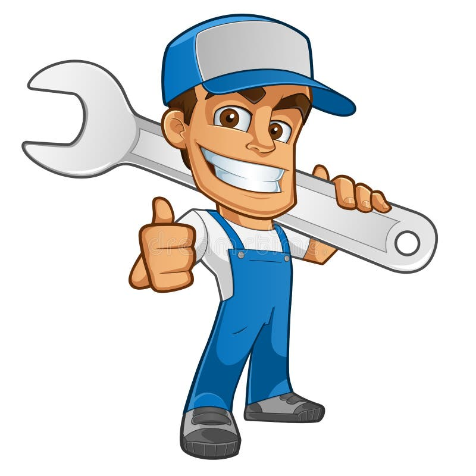
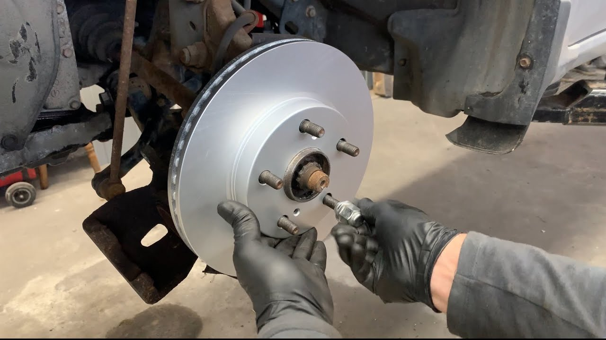
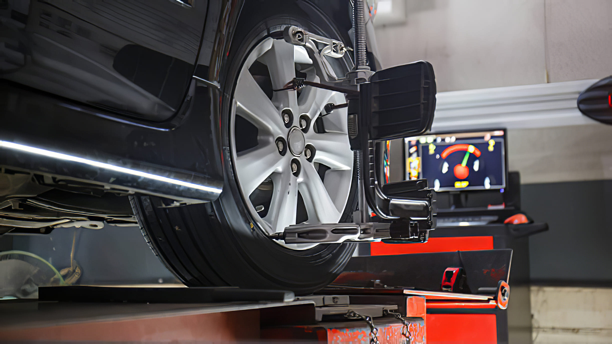

Диагностика
Компьютерная диагностика, проверка систем двигателя, подвески, электрики. Выявление ошибок и скрытых неисправностей.

Автомеханик • Диагностика и ремонт
Профессиональный автомеханик с опытом 10 лет. Берусь за любой ремонт, работаю аккуратно и на совесть!
В работе опираюсь на регламенты, использую качественные расходники и современное оборудование. Если есть сомнения — всегда покажу и расскажу, что и зачем делаю.
Компьютерная диагностика, проверка систем двигателя, подвески, электрики. Выявление ошибок и скрытых неисправностей.
Замена колодок, дисков, шлангов. Прокачка тормозов, проверка суппортов и стояночного тормоза.
Замена амортизаторов, рычагов, сайлентблоков, шаровых опор. Проверка люфтов и углов установки колёс.
Замена ремней, роликов, свечей, фильтров. Проверка герметичности системы охлаждения, замена антифриза и масла.
Проверка АКБ, генератора, стартера. Диагностика проводки, фар, датчиков и блоков управления.
ТО по регламенту, замена расходников, проверка узлов и систем, подготовка к сезону.

Автомобиль: Toyota RAV4. Проблема: посторонние шумы, ошибки по датчикам. Решение: замена ремня, роликов и проверка фаз газораспределения.

Автомобиль: BMW X3. Проблема: вибрация при торможении, износ дисков. Решение: комплект дисков и колодок, проточка ступицы, прокачка системы.

Автомобиль: Audi R8. Проблема: увод в сторону, стуки на неровностях. Решение: замена рычагов и амортизаторов, регулировка развала-схождения.
Для качественной работы использую современное оборудование и проверенные инструменты:
«Всё подробно объяснили, показали причину неисправности и варианты решения. Ремонт сделали в срок, дали рекомендации по обслуживанию.» — Григорий В.
«Обратился с проблемой по подвеске — нашли сразу, лишних работ не навязывали. Приятно работать с профессионалом.» — Анатолий Н.
Готов проконсультировать и взять автомобиль в работу.